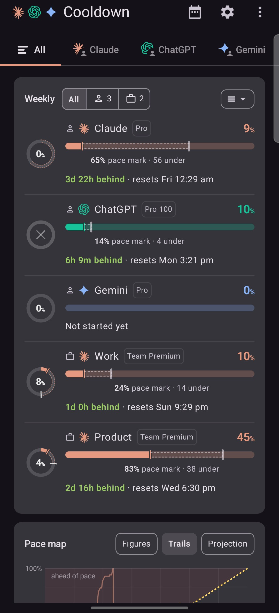
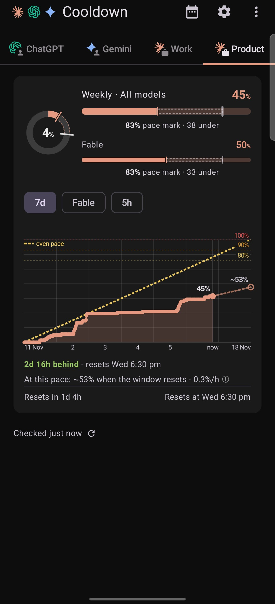
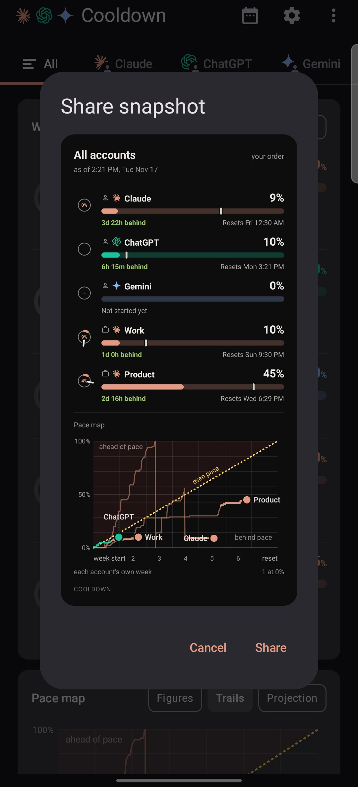
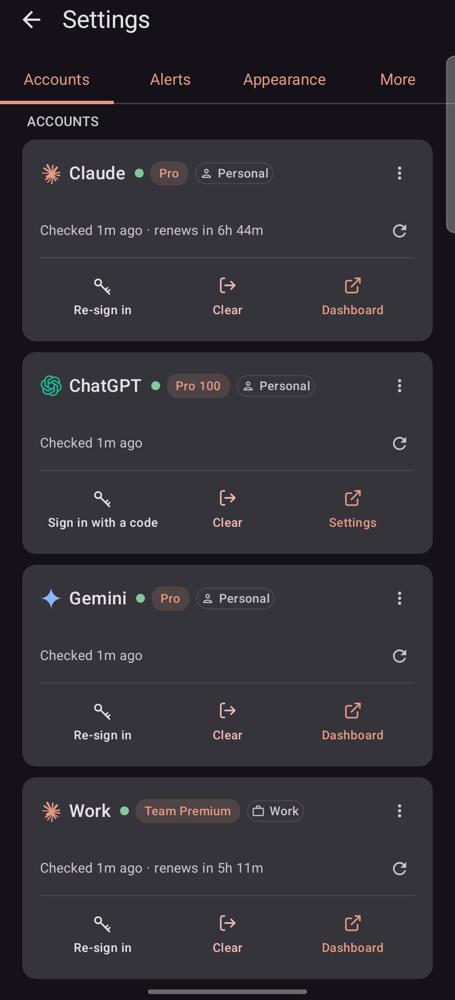
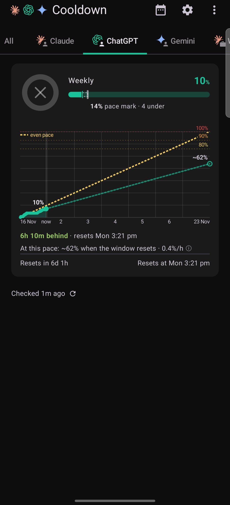
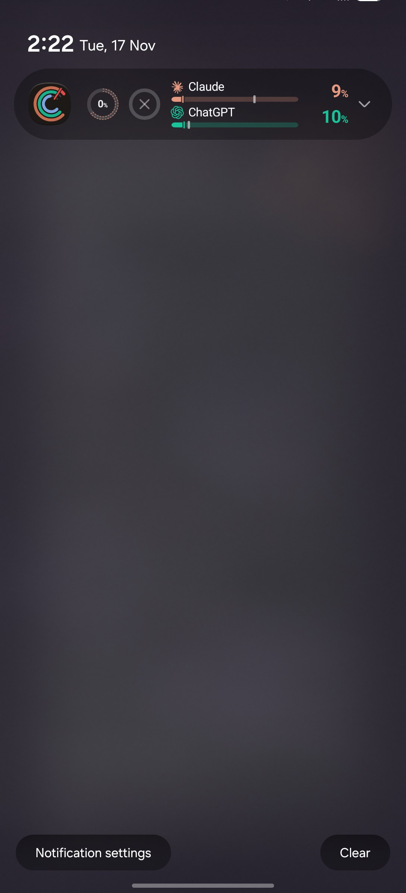
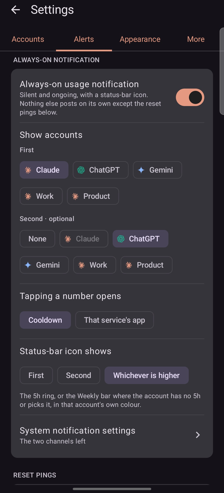
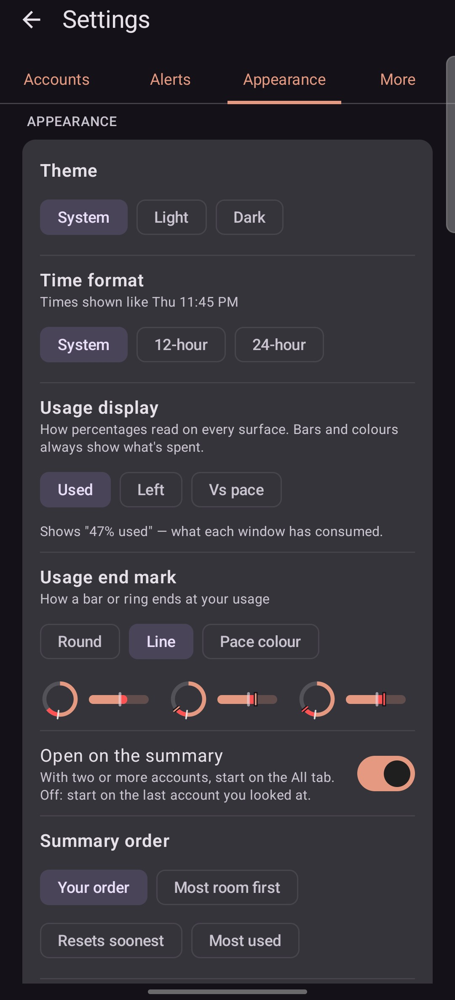

User guide
Version 2.0 beta. Listed as EAM360 Cooldown on TestFlight.
Unofficial integration. Not affiliated with Anthropic, OpenAI or Google.



User guide · Version 2.0 beta · November 2026Robin Richard Rajan, EAM360
Version 2.0 beta. Listed as EAM360 Cooldown on TestFlight.
Unofficial integration. Not affiliated with Anthropic, OpenAI or Google.

Cooldown shows how much of your Claude, ChatGPT and Gemini plan limits you have used, and when they reset. It reads your own accounts and puts the weekly and 5-hour limits on one screen. It runs on Android, iPhone and iPad, and it is free and open source.

The APK on GitHub Releases.
github.com/robineam360/Cooldown
Android 12 or later.

 iPhone and iPad
iPhone and iPadTestFlight, listed as EAM360 Cooldown.
testflight.apple.com/join/TncpZQFM
Build 2.0 (3), until 17 Feb 2027. iOS or iPadOS 18 or later.
Cooldown is in beta. Get the Android build from GitHub Releases and the iPhone and iPad build from TestFlight. We plan to release on Google Play and the App Store once Anthropic, OpenAI and Google have each reviewed and approved how Cooldown reads plan usage from their services.
Add a Gemini account beside Claude and ChatGPT. Sign in on Google's own page, then paste the code it shows.
The weekly limit leads every card. The 5-hour limit is a small ring beside it. Each window says how far ahead or behind an even pace you are.
With two or more accounts the app opens on one page that ranks them. It adds the Pace map, tags and a Share snapshot.
Two 5-hour rings on the left and two weekly bars on the right. The widgets use the same shapes.
See three made-up accounts before you sign in. Nothing is fetched, sent or saved.
Cooldown 2.0 comes to iPhone and iPad as a TestFlight beta, with the same three services.


None of the three services offers a public way for an app to read your plan usage. Cooldown signs in the way each service's own command-line tool does, on that service's own page, and reads the usage numbers its apps show. For Gemini it must also send that tool's identifier, so this sign-in is the least certain of the three. No provider has approved this. A provider can change or close this route at any time, sign Cooldown out, or act on an account that uses it. Use it at your own discretion.
Cooldown only reads. It sends no prompts and uses no quota. It has no server. Your sign-ins stay on your device, encrypted, and go only to the service they belong to.
Cooldown is in beta. Get the Android build from GitHub Releases and the iPhone and iPad build from TestFlight. We plan to release on Google Play and the App Store once Anthropic, OpenAI and Google have each reviewed and approved how Cooldown reads plan usage from their services.
github.com/robineam360/Cooldown/releases. Android 12 or later.Play Protect may offer to scan the file. You can scan it or install anyway.
testflight.apple.com/join/TncpZQFM.Listed as EAM360 Cooldown on TestFlight. There is no iPhone file to download from GitHub.
Install the new Android file over an older version. Sign-ins, history, widgets and settings stay. Not ready to sign in? Choose Try with sample data on the first screen to see three made-up accounts.
Open Settings, then Accounts, then Add account. Pick the service. Each account gets its own tab, its own part of the notification and its own reset alerts.
Pro, Max and Team plans work. A Free plan signs in, but Claude returns no usage for it.
auth.openai.com/codex/device on this phone or any device. Enter the code and approve.
The card shows the plan, a status dot and the last check. Re-sign in uses the same steps as the first sign-in. Remove an account from its menu.
The big bar is the weekly limit. The ring is the 5-hour limit. The tick on the bar marks an even pace. The chart plots every reading against the even-pace line.
The 5-hour ring shows where the plan has one. OpenAI suspended the 5-hour limit for many plans.


A percentage tells you how much is gone. Cooldown also tells you how that compares with an even pace, as time.
"1d 12h behind · resets Sun 9:30 PM" means you have used less than an even pace would have by now. "14h 48m ahead" means you have used more. If you paused, an even pace would catch up in 14 hours 48 minutes.
Behind means less used than an even pace, and it shows in green. Ahead means more used, and it shows in red.
This line applies to weekly windows. The 5-hour ring keeps its own projection.
Under each bar, "65% pace mark · 56 under" gives the mark's place and how far under it you are. Under Appearance, Usage display, Vs pace shows the big figure as your distance from the mark.
With two or more accounts the app opens on All. Every account's week sits on one page, ranked by the most room for the time left. A sort menu also offers your own order, resets soonest and most used.
Each account is a dot plotted against its own week. A dot under the even-pace line is behind. A dot above it is ahead. Figures, Trails and Projection switch its layers. Tap a dot for a callout, and tap again to open the account.
An account at 0% this week leaves the map. The line under the map counts them.
Tag an account Personal or Work. Then filter the Summary by either tag.
Share snapshot sends the whole Summary as one image. Account names are shown. Email addresses are never shown.

Turn it on under Settings, Alerts. Pick a first account and, if you like, a second. The weekly window is the bar and the big figure. The 5-hour window is a ring on the left. Expanded, each account adds its pace line and reset time, and one Refresh button.
The icon shows the 5-hour ring, or the weekly bar for a plan with no 5-hour window. It can follow the first account, the second, or whichever is higher.
Each account and window can ping when it resets: Off, If busy or Always. If busy pings only when the window had reached 80%.
Each half opens Cooldown on that account's tab. You can choose to open that service's own app instead.
Long-press the home screen, open Widgets and pick Cooldown. Drop a widget at any size, from 1×1 to a full row. Its settings open at once. Choose the account, the window and the background.
The 5-hour window is a ring and the week is a bar, as in the notification.
If you use widgets without the always-on notification, add Cooldown to the never sleeping apps in Android's battery settings. Otherwise the system can pause the background refresh.
Cooldown offers home-screen and lock-screen widgets, a Live Activity and a Control Center control.


Accounts holds sign-in, plan, tag and order.
Alerts holds the notification, the status-bar icon and reset alerts.
Appearance holds theme, density, chart options, time format and Usage display.
More holds refresh rate, updates, About and the privacy policy.
| A half looks dimmed | Refreshes failed for six hours. You see the last known numbers. It fixes itself on the next good refresh. |
| Re-auth needed | The sign-in expired. Tap Re-sign in on that account's card. |
| Free plan message | Claude returns no usage for a Free plan. Move to Pro, Max or Team, or remove the account. |
| Rate limited | The service asked the app to wait, and the app retries. If renewing the sign-in keeps failing, tap Re-sign in. |
| A widget stopped updating | Add Cooldown to the never sleeping apps in Android's battery settings. |
| Cannot open saved sign-ins | Android's secure storage is not answering. Your sign-ins are still there. Tap Try again to check now. |
| No reset alert arrived | Check notification permission and that the reset is not Off. If busy skips windows that never reached 80%. |
| A crash card appears | Tap Share report to send it to the developer. It holds no sign-in and no email. |
Anything else: Settings, More, Diagnostics shares the app log.
Cooldown only reads. It sends no prompts and uses no quota. It has no server. Your sign-ins stay on your device, encrypted, and go only to the service they belong to.
There is no analytics and no tracking. A crash report stays on your device until you share it. Remove account deletes that account's data from the device.
Unofficial integration. Not affiliated with Anthropic, OpenAI or Google.
Beta. Store releases follow once each provider has reviewed and approved it. Listed as EAM360 Cooldown on TestFlight.
Claude and Anthropic are trademarks of Anthropic. ChatGPT and OpenAI are trademarks of OpenAI. Gemini and Google are trademarks of Google. Cooldown uses the names only to say which service an account belongs to.
iPhone and iPad are trademarks of Apple Inc., registered in the U.S. and other countries. Android is a trademark of Google LLC. The Android robot is reproduced or modified from work created and shared by Google and used according to terms described in the Creative Commons 3.0 Attribution License.
The README on GitHub explains how each sign-in works and how to build from source. The privacy policy at docs/privacy.md lists every host the app talks to and everything it stores.
Made by Robin Richard Rajan, EAM360. Free and open source under the MIT License. Questions and feedback: open an issue on GitHub.
The APK on GitHub Releases.
github.com/robineam360/Cooldown
Android 12 or later.
iPhone and iPadTestFlight, listed as EAM360 Cooldown.
testflight.apple.com/join/TncpZQFM
Build 2.0 (3), until 17 Feb 2027. iOS or iPadOS 18 or later.